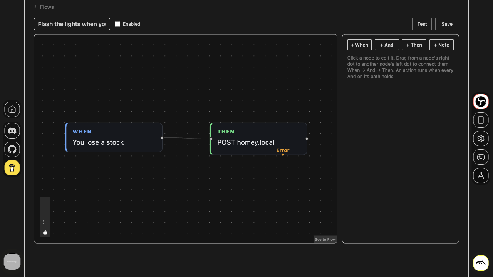
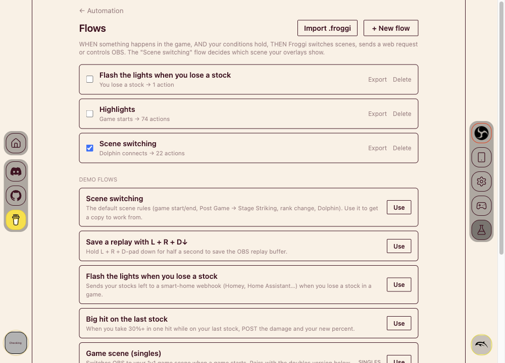

Flows
React to the game: switch scenes, control OBS, call webhooks.




What are flows?
A flow is a small rule: WHEN something happens, AND some things are true, THEN do something. You build it on a canvas by connecting blocks — like Homey or Home Assistant automations.
- WHEN — a game starts or ends, a player loses a stock or takes damage, the scene changes, stage striking moves on, a controller combo is held (Windows)
- AND — singles or doubles, the game mode, a player's stocks or percent, the Froggi scene, the OBS scene, whether the replay buffer is on, or compare any value ("if
{{state.players.1.percent}}≥ 100"). All must be true. - THEN — send a web request (smart home, Discord, your server), switch OBS scene, show/hide a source, set a volume, save a replay
Simple Scene and Controller Commands still do one-step jobs — flows are for when you need a condition or something outside OBS.
Free and open source — Windows, macOS and Linux. Step-by-step guides are built into the app, or ask the AI assistant.